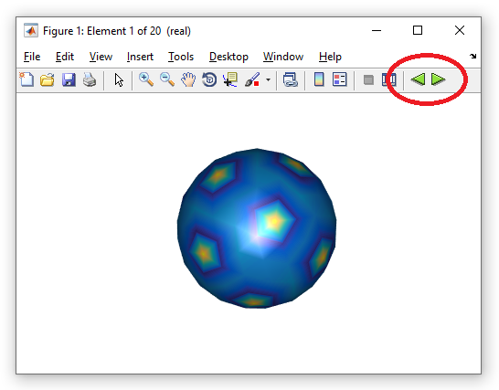

galerkinstat.eig
Eigenmodes of quasistatics BEM approach, see Hohenester, Nano and Quantum Optics (Springer, 2020), chapter 9.
Contents
Initialization
% compute eigenmodes of quasistatic BEM approach % tau - vector of boundary elements % nev - number of eigenvalues, default value is 20 % ene - eigenvalues % u - eigenmodes % 'rules' - default integration rules % 'rules1' - integration rules for refined integration % 'relcutoff' - relative cutoff for refined integration % 'waitbar' - show waitbar during evaluation [ ene, u ] = galerkinstat.eig( tau, nev, PropertyPairs );
Examples
% material properties for water and gold mat1 = Material( 1.33 ^ 2, 1 ); mat2 = Material( epstable( 'gold.dat' ), 1 ); % material vector mat = [ mat1, mat2 ]; % nanosphere with 20 nm radius diameter = 20; p = trisphere( 144, diameter ); % convert to boundary elements with linear shape functions % [ 2, 1 ] defines the materials at the particle inside and outside tau = BoundaryVert( mat, p, [ 2, 1 ] ); % compute geometric eigenmodes [ ene, u ] = galerkinstat.eig( tau ); % plot eigenmodes plot( tau, u );

By pressing the green arrows highlighted by the red circle, one can sweep through the various eigenmodes.
- demostateig01.m - Plot quasistatic eigenvalues and modes for nanosphere.
- demostateig02.m - Plot quasistatic eigenmodes for nanoellipsoid.
- demostateig03.m - Plot quasistatic eigenmodes for nanocube.
Copyright 2022 Ulrich Hohenester